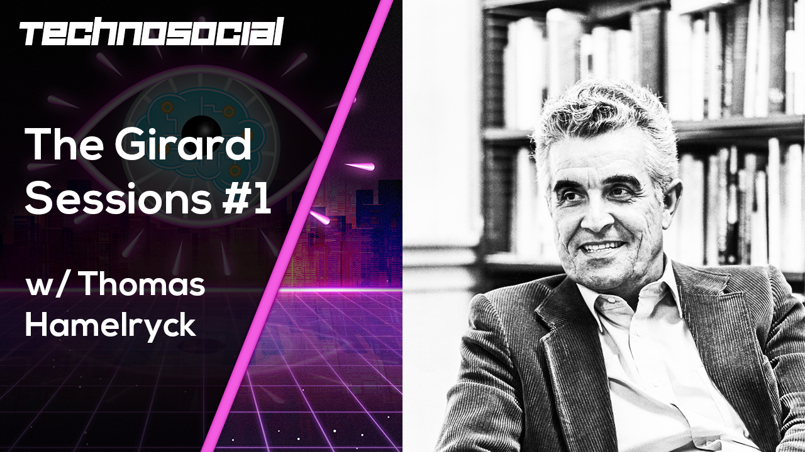

I approach this question using the ideas of the French philosophical anthropologist René Girard (1923-2015), who studied medieval history at the famous École des Chartes in Paris, but spent most of his career in the US as a professor in philosophical anthropology at Duke, Bryn Mawr, Johns Hopkins, Buffalo and, finally, Stanford. In 2005, he was elected to the Académie française.
Below are some rather speculative and explorative talks and discussions with
anthropologists, philosophers, writers, artists and futurologists on this subject. Caveat emptor!
Picture:
"The fight between carnival and lent", Pieter Bruegel the Elder, 1559 (Wikipedia).
Following the famous dichotomy posed by the French sociologist
Émile Durkheim (1858 - 1917),
the perennial fight between lent (representing prohibition and profane time) and carnival
(representing transgression and sacred time) is the perfect anthropological metaphor for our
tumultuous times.

thamelry@bio.ku.dk
Department of biology
Section for Computational and RNA Biology (SCARB)
Ole Maaløes Vej 5
DK-2200 Copenhagen N
and
Department of computer science
Programming languages and theory of computation section (PLTC)
Universitetsparken 5, HCØ, building B
DK-2100 Copenhagen Ø
University of Copenhagen
Denmark